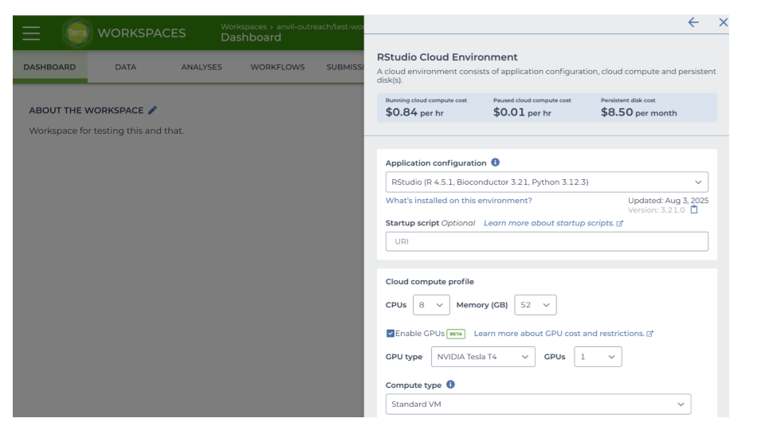

Chapter 2 Run Local Models
Running Local AI Models with RStudio and Ollama
2.1 Learning Objectives
- Provision infrastructure: Configure and launch a GPU-accelerated RStudio environment on AnVIL.
- Deploy local AI: Install and run an Ollama server locally, and download
qwen3-codermodel. - Integrate with R: Connect R to the local AI server via ellmer.
2.2 RStudio Setup with GPU on AnVIL
Before you can interact with local AI models, you must provision a cloud-based RStudio environment on AnVIL equipped with adequate hardware.
2.2.1 Open the workspace and configure compute settings
- In AnVIL, navigate to your workspace.
- Click on the cloud icon on the far right to view Cloud Environment options.
- In the dialog box, under RStudio, click Settings.
- Configure:
| Parameter | Selection |
|---|---|
| Application | RStudio |
| CPUs | 8 |
| Memory | 52 GB |
| GPU configuration | Enable GPUs (toggle ON) |
| GPU type | NVIDIA Tesla T4 |
| Number of GPUs | 1 |

- Read and review the estimated hourly running cost displayed in the dialog.
- Scroll down and click CREATE.
- The GPU type and the configuration options above are what AnVIL offered when this document was written. Available GPU types and configurations may change as GPU options on AnVIL evolve.
- The basic recommendation is to enable the smallest GPU option that comfortably holds your LLM model.
2.2.2 Launch RStudio
- When your environment is ready, its status will change to green (Running).
- Click the RStudio icon, then Open. RStudio will open in a new browser tab.
2.2.3 Install Ollama server and download the model
- In RStudio, click the Terminal tab next to the Console tab.
All commands in this section must be executed in the Terminal (not inside R Console).
- Install the server and pull the model by running this code in the Terminal.
# 1. Download the local Ollama server into a folder
mkdir ollama
curl -fsSL https://ollama.com/download/ollama-linux-amd64.tar.zst | tar x --zstd -C ollama
# 2. Launch the server in the background, logging to a file
nohup ollama/bin/ollama serve > ollama.log 2>&1 &
# 3. Pull (download) the model
ollama/bin/ollama pull qwen3-coder:30b- Ollama may unload the model from memory after 5 or more minutes of inactivity.
- To keep the model in memory you can set the environment variable
OLLAMA_KEEP_ALIVE=-1.
- If you don’t keep Ollama ‘alive’, after inactivity, you may need to pull the model again in the Terminal like so:
ollama/bin/ollama pull qwen3-coder:30b.
- Do a test prompt and wait for the response.
NOTE - The first response may take more than a minute (subsequent responses will be faster). You can check by running the same test prompt a second time and noting the increase in the speed of the response.
TIP - If the first prompt response is taking too long, CANCEL the command (Command + C on Mac), and then re-run the command. This will typically fix the response hold-up.
- Check if GPU is active:
Example terminal output:
NAME ID SIZE PROCESSOR CONTEXT UNTIL
qwen3-coder:30b 06c1097efce0 19 GB 25%/75% CPU/GPU 4096 About a minute from now 2.2.4 Connect R to the local AI server
All commands in this section must be executed in the R Console (not inside Terminal).
- Install and load required packages by running the following code in the R Console:
- Connect R to your local AI server by running the following code in the R Console:
ellmer provides the R functions that let you connect to and communicate with your local AI server from R.
Make sure you have installed and loaded ellmer before continuing.
chat <- chat_ollama(
base_url = Sys.getenv("ollama/bin/ollama", "http://localhost:11434"),
model = "qwen3-coder:30b",
)Notice how you didn’t need to specifically evoke ellmer via ellmer::chat_ollama()?
This is because you had already loaded the package into your session using library(ellmer), which makes its functions directly available in your current environment.
Alternatively, you could code explicitly: `chat <- ellmer::chat_ollama(...).
- Test the connection by asking AI a question
2.2.5 Quiz
- Ask AI a question using
chat$chatand paste question and answer below?
Question:
Answer:
- Why does enabling a GPU matter for this workshop?
A. DESeq2 requires a GPU.
B. The large language model (LLM) is hosted locally and runs much faster on a GPU.
C. It speeds up the cloud storage data transfer during the bucket copy process.
D. It is required by AnVIL on RStudio.
Correct Answer: B (The LLM is hosted locally and generates responses much faster on a GPU.)
- You provision an RStudio instance with 8 CPUs, 52 GB of system memory, and 1 NVIDIA Tesla T4 GPU (16 GB VRAM). You plan to load a 19 GB model (e.g. qwen3-coder). What will happen when you load the model?
A. The model will fit entirely within the 16 GB VRAM of the Tesla T4 GPU.
B. The model will fail to load completely because it exceeds the total system memory of 52 GB.
C. The application will automatically split the model layers between the GPU and the CPU system memory, allowing it to run successfully despite being slower than a fully resident model.
D. The environment will automatically upgrade your hardware to a larger GPU to accommodate the full 19 GB model in VRAM.
Correct Answer: C (Because the ~19 GB model exceeds the Tesla T4’s 16 GB VRAM capacity, the model cannot fit entirely on the graphics card and automatically offloads the remaining layers to the CPU, allowing the model to run successfully even though it will be slower than a fully GPU-resident model.)
- What is the primary purpose of running the “nohup” command?
A. To run the Ollama server in the background, keeping it alive even if the terminal session ends or the tab is closed, while redirecting output to a log file.
B. To automatically update the server to the latest version and pin the release for workshop reproducibility.
C. To force the 19 GB model download to run concurrently with the server startup.
D. To execute the server commands directly inside the R Console without throwing an error.
Correct Answer: A (nohup (no hangup) combined with the trailing & allows the process to continue running in the background after the terminal session closes, preventing the process from terminating when you close your terminal window.)
- If a user’s network connection drops halfway through downloading the 19 GB qwen3-coder:30b model, what happens when they rerun the pull command?
A. The download fails permanently, requiring them to delete the ollama directory and start from scratch.
B. The ollama pull command is resumable, meaning the download picks up where it left off rather than starting over from 0%.
C. Ollama automatically falls back to downloading the smaller llama3.1 model instead.
D. The model gets corrupted, forcing the user to manually purge the cache using
ollama cleanbefore retrying.
Correct Answer: B (Ollama’s pull command supports resumable downloads, saving users time and frustration if an interruption occurs during large model transfers.)
- In the command
nohup ollama/bin/ollama serve, what is the role of theserveargument passed to the Ollama?
A. It forces termination of active background sessions.
B. It initializes and runs the local API server.
C. It compiles the local source code into an executable.
D. It downloads and installs the latest binary updates.
Correct Answer: B (Passing the serve argument tells the Ollama executable to start up as an active API server ready to handle requests.)